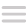

<!-- Encabezado de toda la página -->                    
<header id="header"> 
        <!-- Imagen corporativa -->
        <div id="logo">
            <a href="/index.php"></a>
            <!-- Botón del menú para responsive -->
            <a href="#" id="pull"></a>
        </div> <!-- Cierre del logo -->
        <!-- Menú -->
        <nav id="menu_nav">
            <!-- Lista desordenada -->
            <ul>
                <!-- Item 1, Cartelera --> 
                <li>
                    <a href="views/cartelera.php" class="link"> Cartelera </a>
                </li> <!-- Cierre de la Cartelera -->
                <!-- Item 2, Próximamente --> 
                <li>
                    <a href="views/proximamente.php" class="link"> Próximamente </a>
                </li> <!-- Cierre de la Próximamente -->
                <!-- Item 3, Buscador --> 
                <li>
                    <!-- Caja de buscador -->
                    <div id="buscador">
                         <form method="post" action="../views/buscar.php" id="search">
                            <input name="pelicula" type="text" size="40" placeholder="Buscar pelicula" />
                        </form>
                    </div> <!-- Cierre de la caja del buscador -->
                </li> <!-- Cierre de la Buscador -->

                <!-- Items logueo -->              
                    <?php
                        // Diseño en un fichero externo
                        echo "<link href=\"../css/main.css\" rel=\"stylesheet\" type=\"text/css\" >";
                        // Se inicia sesión o reanuda la sesión
                        session_start();
                        // Si la variable de sesión id_usuario no tiene valor y es nulo
                        if(!(isset($_SESSION['id_usuario']) && $_SESSION['id_usuario']!='')){
                            // Se incluye el archivo noLog que contiene los botones de login y registro
                            include("includes/noLog.html");
                        }
                        else{ // Si la variable de sesión id_usuario tiene el valor distinto a nulo

                            // Link para ir al perfil de usuario
                            echo "<a href='views/profile.php' class='link'>Hola, <b>" . $_SESSION["nombreUsuario"]."</b></a>";

                            //Boton salir
                            include("includes/logInicio.html");

                        }
                    ?>
            </ul> <!-- Cierre de la lista desordenada -->
        </nav> <!-- Cierre del menú -->
</header> <!-- Cierre del encabezado -->